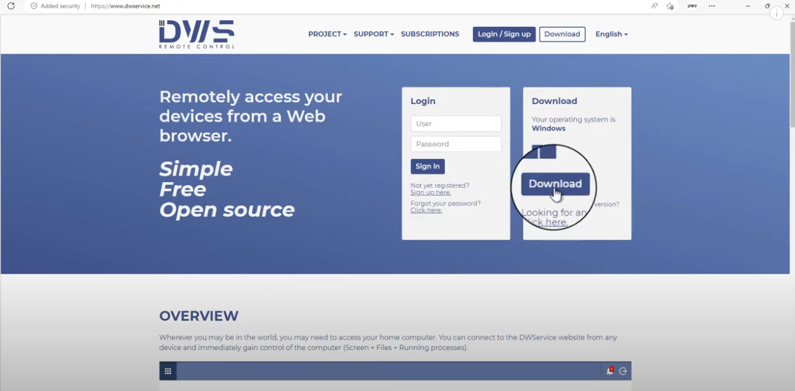
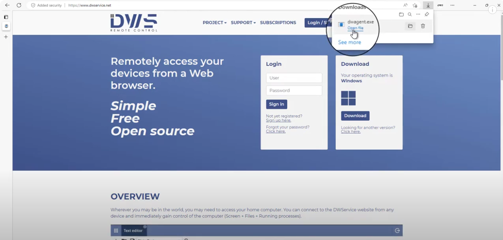
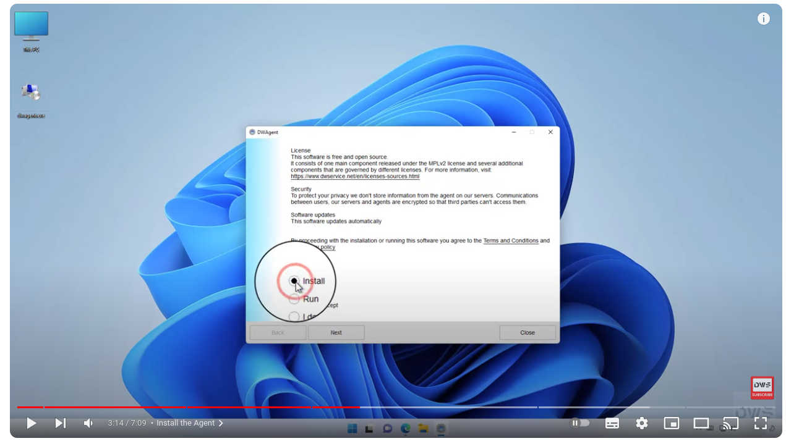
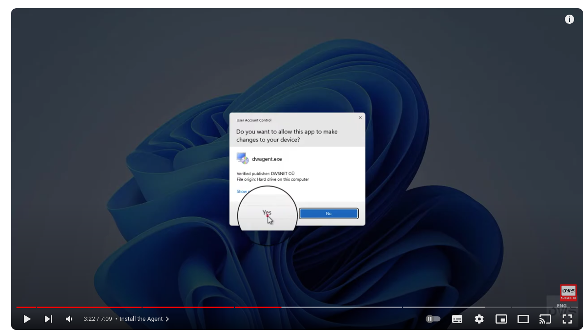
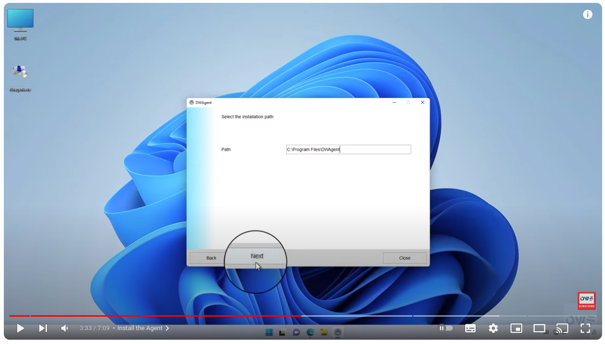
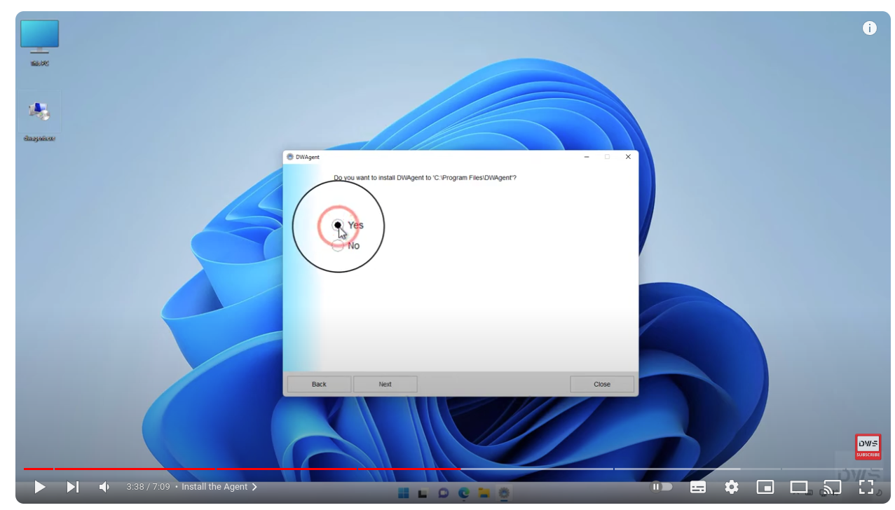
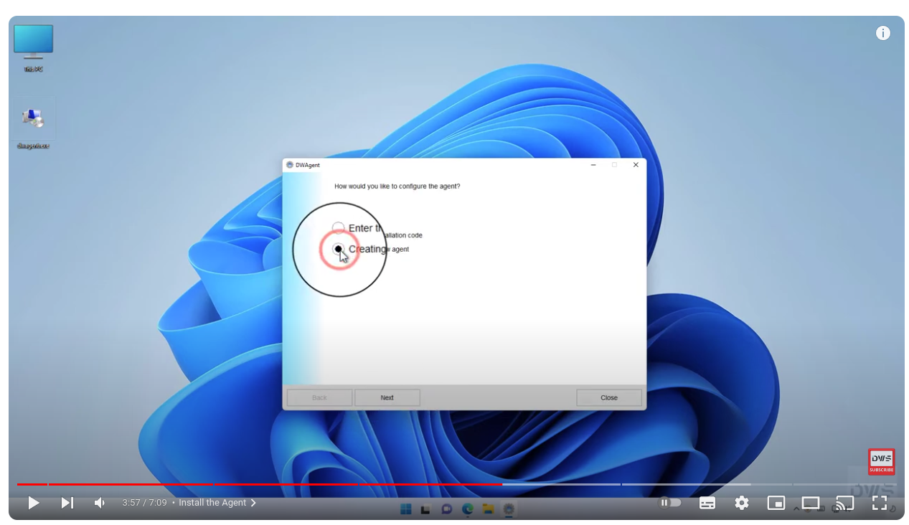
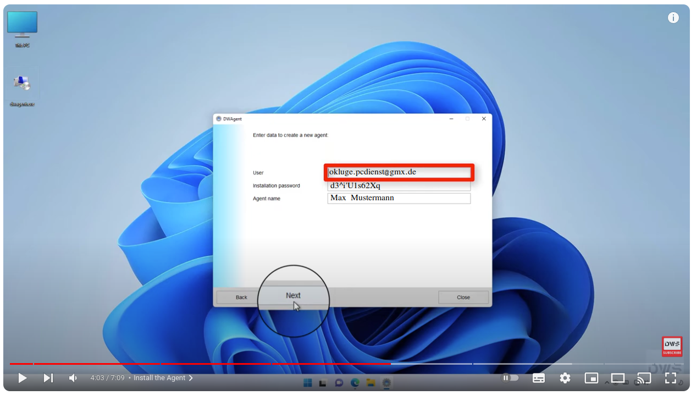
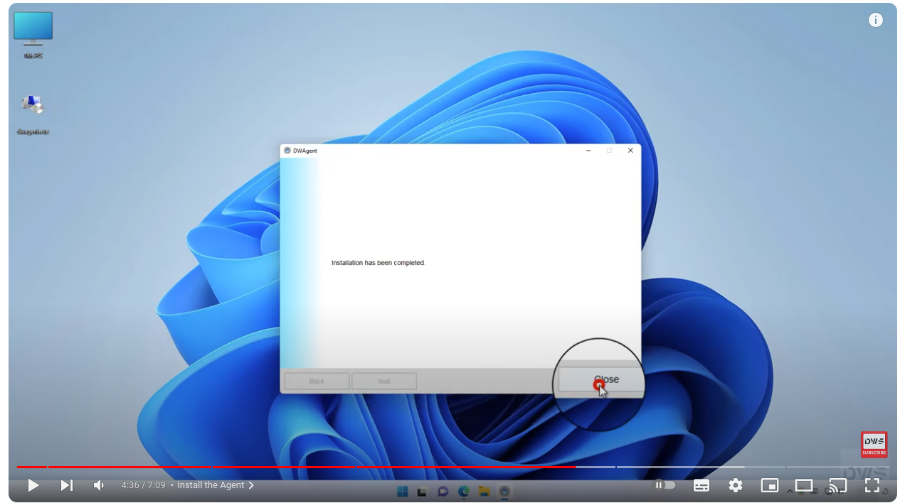

Für die Fernwartung bevorzuge ich das Programm DWService, da es eine einfache Möglichkeit bietet, auf Ihr Gerät zuzugreifen und Ihnen bei Problemen zu helfen. Damit ich auf Ihr Gerät zugreifen kann, ist jedoch eine kleine Installation des Programms notwendig, die Sie jetzt anhand der untenstehenden Anleitung durchführen können.
Wenn die Installation abgeschlossen ist, werde ich mich zum vereinbarten Termin telefonisch bei Ihnen melden und mich auf Ihr Gerät einwählen, um die Fernwartung durchzuführen. Die Abrechnung erfolgt zu den bekannten Gebühren per Rechnung, die Sie nach Abschluss der Fernwartung per E-Mail erhalten. Diese kann anschließend per Überweisung beglichen werden.
Schritt 1: Download
Besuchen Sie die offizielle DWService-Website: https://www.dwservice.net/de/.
Laden Sie den Agenten herunter: Klicken Sie auf "Download" und wählen Sie die passende Version für Ihr Betriebssystem (Windows, macOS, Linux) herunter.
Schritt 2: Installation starten
Starten Sie die heruntergeladene Datei: Doppelklicken Sie auf die heruntergeladene Datei, um die Installation zu starten.
Schritt 3: Installationsart auswählen
Wählen Sie "Installieren": Im ersten Fenster wählen Sie die Option "Installieren" oder "Install" aus.
Schritt 4: Sicherheitswarnungen bestätigen
Bestätigen Sie Sicherheitswarnungen: Wenn Ihr Betriebssystem eine Sicherheitswarnung anzeigt, bestätigen Sie diese mit "Ja" oder "Yes".
Schritt 5: Installationsort wählen
Wählen Sie den Installationsort: Bestätigen Sie den vorgeschlagenen Installationsort oder wählen Sie einen anderen aus. Klicken Sie dann auf "Weiter" oder "Next".
Schritt 6: Installation bestätigen
Bestätigen Sie die Installation: Bestätigen Sie die Installation mit "Ja" oder "Yes".
Schritt 7: Fortschritt überwachen
Warten Sie auf den Abschluss: Während der Installation sehen Sie einen Fortschrittsbalken.
Schritt 8: Neuer Agent anlegen
Nach Abschluss der Installation werden Sie aufgefordert, einen neuen Agenten anzulegen. Wählen Sie "Einen neuen Agenten anlegen" oder "Creating new Agent" aus.
Schritt 9: Agenten-Daten eingeben
Geben Sie folgende Daten ein:
Klicken Sie auf "Weiter" oder "Next", um die Eingaben zu bestätigen.
Schritt 10: Installation abschließen
Klicken Sie auf "Schließen" oder "Close", um die Installation abzuschließen.
